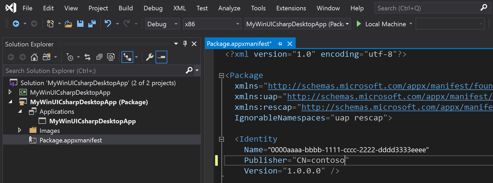
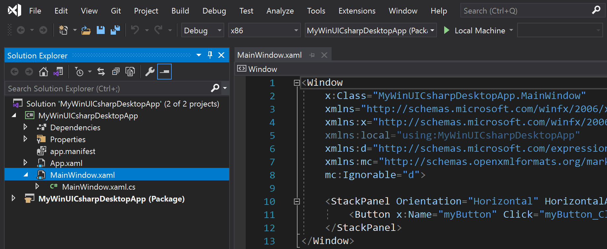
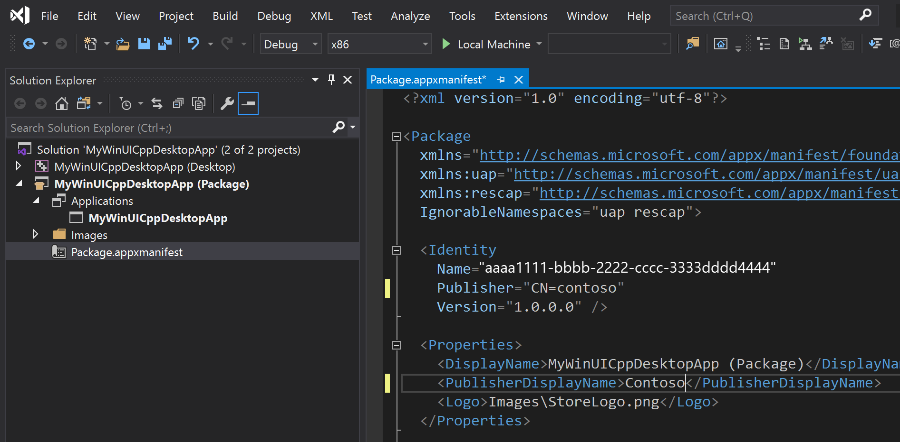
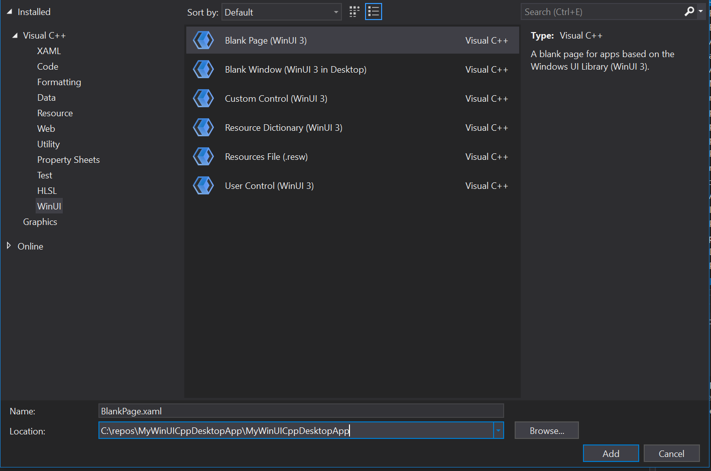
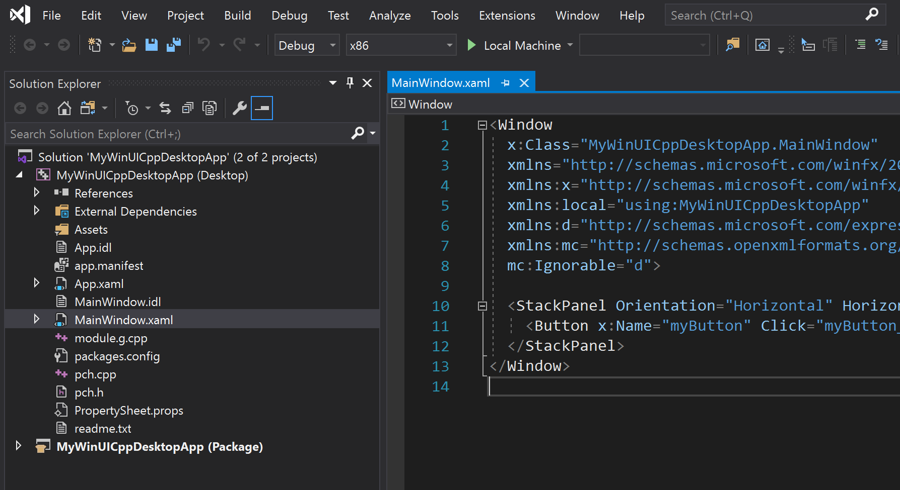
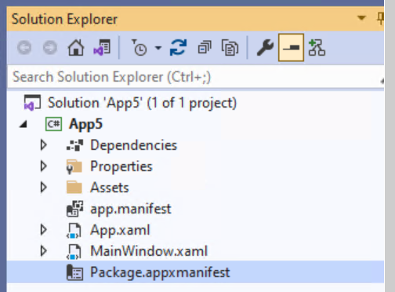
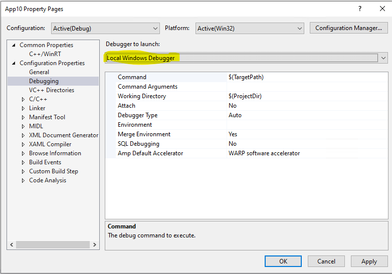

Create a WinUI 3 app using Preview and Experimental channels of the Windows App SDK
The Windows App SDK includes WinUI 3 project templates that enable you to create desktop apps with an entirely WinUI-based user interface. When you create apps using these project templates, the entire user interface of your application is implemented using windows, controls, and other UI types provided by WinUI 3. For a complete list of the project templates, see WinUI 3 templates in Visual Studio.
Using the Windows App SDK Stable version: To build a WinUI 3 app using the stable version of the Windows App SDK, see Create your first WinUI 3 project.
Prerequisites
To use the WinUI 3 project templates described in this article, configure your development computer and install the Windows App SDK extension for Visual Studio. For details, see Install tools for preview and experimental channels of the Windows App SDK.
Instructions for WinUI 3 packaged desktop apps
To create a WinUI 3 application with MSIX packaging, choose from one of the following sets of instructions depending on the project language and the version of the Windows App SDK you have installed.
To create a WinUI 3 desktop app with C# using Windows App SDK 1.0 Preview 3:
In Visual Studio, select File -> New -> Project.
In the project drop-down filters, select C#, Windows, and WinUI, respectively.
Select one of the following project types and click Next.
Blank App, Packaged (WinUI 3 in Desktop): Creates a desktop C# .NET app with a WinUI-based user interface. The generated project is configured with the package manifest and other support needed to build the app into an MSIX package without the use of a separate packaging project. For more information about this project type, see Package your app using single-project MSIX.
Blank App, Packaged with WAP (WinUI 3 in Desktop): Creates a desktop C# .NET app with a WinUI-based user interface. The generated solution includes a separate Windows Application Packaging Project that is configured to build the app into an MSIX package.

Enter a project name, choose any other options as desired, and click Create.
In the following dialog box, set the Target version to Windows 10, version 2004 (build 19041) and Minimum version to Windows 10, version 1809 (build 17763) and then click OK.

At this point, Visual Studio generates one or more projects:
Project name (Desktop): This project contains your app's code. The App.xaml file and App.xaml.cs code-behind file define an Application class that represents your app instance. The MainWindow.xaml file and MainWindow.xaml.cs code-behind file define a MainWindow class that represents the main window displayed by your app. These classes derive from types in the Microsoft.UI.Xaml namespace provided by WinUI.
If you used the Blank App, Packaged (WinUI 3 in Desktop) project template, this project also includes the package manifest for building the app into an MSIX package.

Project name (Package): This project is generated only if you use the Blank App, Packaged with WAP (WinUI 3 in Desktop) project template. This project is a Windows Application Packaging Project that is configured to build the app into an MSIX package. This project contains the package manifest for your app, and it is the startup project for your solution by default.

Enable deployment for your project in Configuration Manager. If you do not follow these steps to enable deployment, you will encounter the following error when you try to run or debug your project on your development computer: "The project needs to be deployed before we can debug. Please enable Deploy in the Configuration Manager".
Select Build -> Configuration Manager.
In Configuration Manager, click the Deploy check box for every combination of configuration and platform (for example, Debug and x86, Debug and arm64, Release and x64, and more).
Note
Be sure to use the Active solution configuration and Active solution platform drop-downs at the top instead of the Configuration and Platform drop-downs in the same row as the Deploy check box.

To add a new item to your app project, right-click the Project name (Desktop) project node in Solution Explorer and select Add -> New Item. In the Add New Item dialog box, select the WinUI tab, choose the item you want to add, and then click Add. For more details about the available items, see WinUI 3 templates in Visual Studio.

Build and run your solution on your development computer to confirm that the app runs without errors.
Localize your WinUI desktop app
To support multiple languages in a WinUI desktop app, and ensure proper localization of your packaged project, add the appropriate resources to the project (see App resources and the Resource Management System) and declare each supported language in the package.appxmanifest file of your project. When you build the project, the specified languages are added to the generated app manifest (AppxManifest.xml) and the corresponding resources are used.
Open the .wapproj's package.appxmanifest in a text editor and locate the following section:
<Resources>
<Resource Language="x-generate"/>
</Resources>
Replace the <Resource Language="x-generate"> with <Resource /> elements for each of your supported languages. For example, the following markup specifies that "en-US" and "es-ES" localized resources are available:
<Resources>
<Resource Language="en-US"/>
<Resource Language="es-ES"/>
</Resources>
To create a WinUI 3 desktop app with C# and .NET using Windows App SDK 1.0 Experimental or earlier releases:
In Visual Studio, select File -> New -> Project.
In the project drop-down filters, select C#, Windows, and WinUI, respectively.
Select Blank App, Packaged (WinUI 3 in Desktop) and click Next. Enter a project name, choose any other options as desired, and click Create.
In the following dialog box, set the Target version to Windows 10, version 2004 (build 19041) and Minimum version to Windows 10, version 1809 (build 17763) and then click OK.
At this point, Visual Studio generates two projects:
Project name (Desktop): This project contains your app's code. The App.xaml file and App.xaml.cs code-behind file define an Application class that represents your app instance. The MainWindow.xaml file and MainWindow.xaml.cs code-behind file define a MainWindow class that represents the main window displayed by your app. These classes derive from types in the Microsoft.UI.Xaml namespace provided by WinUI.

Project name (Package): This is a Windows Application Packaging Project that is configured to build the app into an MSIX package. This project contains the package manifest for your app, and it is the startup project for your solution by default.
Note
Optionally, you can install the single-project MSIX packaging tools extension for Visual Studio and combine the packaging project settings into your application project. This extension enables you to develop and build your packaged app without requiring a separate packaging project. For more information, see Package your app using single-project MSIX.
To add a new item to your app project, right-click the Project name (Desktop) project node in Solution Explorer and select Add -> New Item. In the Add New Item dialog box, select the WinUI tab, choose the item you want to add, and then click Add. For more details about the available items, see WinUI 3 templates in Visual Studio.
Build and run your solution to confirm that the app runs without errors.
Localize your WinUI desktop C# app
To support multiple languages in a WinUI desktop app, and ensure proper localization of your packaged project, add the appropriate resources to the project (see App resources and the Resource Management System) and declare each supported language in the package.appxmanifest file of your project. When you build the project, the specified languages are added to the generated app manifest (AppxManifest.xml) and the corresponding resources are used.
Open the .wapproj's package.appxmanifest in a text editor and locate the following section:
<Resources>
<Resource Language="x-generate"/>
</Resources>
Replace the <Resource Language="x-generate"> with <Resource /> elements for each of your supported languages. For example, the following markup specifies that "en-US" and "es-ES" localized resources are available:
<Resources>
<Resource Language="en-US"/>
<Resource Language="es-ES"/>
</Resources>
To create a WinUI 3 desktop app with C++ using Windows App SDK 1.0 Preview 2:
In Visual Studio, select File -> New -> Project.
In the project drop-down filters, select C++, Windows, and WinUI.
Select one of the following project types and click Next.
Blank App, Packaged (WinUI 3 in Desktop): Creates a desktop C++ app with a WinUI-based user interface. The generated project is configured with the package manifest and other support needed to build the app into an MSIX package without the use of a separate packaging project. For more information about this project type, see Package your app using single-project MSIX.
Note
This project type only supports a single executable in the generated MSIX package. If you need to combine multiple executables into a single MSIX package, you must use the Blank App, Packaged with WAP (WinUI 3 in Desktop) project template or add a Windows Application Packaging Project to your solution.
Blank App, Packaged with WAP (WinUI 3 in Desktop): Creates a desktop C++ app with a WinUI-based user interface. The generated solution includes a separate Windows Application Packaging Project that is configured to build the app into an MSIX package.

Enter a project name, choose any other options as desired, and click Create.
In the following dialog box, set the Target version to Windows 10, version 2004 (build 19041) and Minimum version to Windows 10, version 1809 (build 17763) and then click OK.
At this point, Visual Studio generates one or more projects:
Project name (Desktop): This project contains your app's code. The App.xaml and various App code files define an Application class that represents your app instance, and the MainWindow.xaml and various MainWindow code files define a MainWindow class that represents the main window displayed by your app. These classes derive from types in the Microsoft.UI.Xaml namespace provided by WinUI.
If you used the Blank App, Packaged (WinUI 3 in Desktop) project template, this project also includes the package manifest for building the app into an MSIX package.

Project name (Package): This project is generated only if you use the Blank App, Packaged with WAP (WinUI 3 in Desktop) project template. This project is a Windows Application Packaging Project that is configured to build the app into an MSIX package. This project contains the package manifest for your app, and it is the startup project for your solution by default.

To add a new item to your app project, right-click the Project name (Desktop) project node in Solution Explorer and select Add -> New Item. In the Add New Item dialog box, select the WinUI tab, choose the item you want to add, and then click Add. For more details about the available items, see WinUI 3 templates in Visual Studio.

Build and run your solution on your development computer to confirm that the app runs without errors.
Note
On Visual Studio 2022 version 17.0 releases up to Preview 4, you will encounter the error "There were deployment errors" the first time you try to run your solution. To resolve this issue, run or deploy your solution a second time. This issue will be fixed in Visual Studio 2022 version 17.0 Preview 5.
Localize your WinUI desktop C++ app
To support multiple languages in a WinUI desktop app, and ensure proper localization of your packaged project, add the appropriate resources to the project (see App resources and the Resource Management System) and declare each supported language in the package.appxmanifest file of your project. When you build the project, the specified languages are added to the generated app manifest (AppxManifest.xml) and the corresponding resources are used.
Open the .wapproj's package.appxmanifest in a text editor and locate the following section:
<Resources>
<Resource Language="x-generate"/>
</Resources>
Replace the <Resource Language="x-generate"> with <Resource /> elements for each of your supported languages. For example, the following markup specifies that "en-US" and "es-ES" localized resources are available:
<Resources>
<Resource Language="en-US"/>
<Resource Language="es-ES"/>
</Resources>
To create a WinUI 3 desktop app with C++ using Windows App SDK 1.0 Experimental and earlier releases:
In Visual Studio, select File -> New -> Project.
In the project drop-down filters, select C++, Windows, and WinUI.
Select Blank App, Packaged (WinUI 3 in Desktop) and click Next. Enter a project name, choose any other options as desired, and click Create.
In the following dialog box, set the Target version to Windows 10, version 2004 (build 19041) and Minimum version to Windows 10, version 1809 (build 17763) and then click OK.
At this point, Visual Studio generates two projects:
Project name (Desktop): This project contains your app's code. The App.xaml and various App code files define an Application class that represents your app instance, and the MainWindow.xaml and various MainWindow code files define a MainWindow class that represents the main window displayed by your app. These classes derive from types in the Microsoft.UI.Xaml namespace provided by WinUI.

Project name (Package): This is a Windows Application Packaging Project that is configured to build the app into an MSIX package. This provides a modern deployment experience, the ability to integrate with Windows 10 and later features via package extensions, and much more. This project contains the package manifest for your app, and it is the startup project for your solution by default.
Note
Optionally, you can install the single-project MSIX packaging tools extension for Visual Studio and combine the packaging project settings into your application project. This extension enables you to develop and build your packaged app without requiring a separate packaging project. For more information, see Package your app using single-project MSIX.
To add a new item to your app project, right-click the Project name (Desktop) project node in Solution Explorer and select Add -> New Item. In the Add New Item dialog box, select the WinUI tab, choose the item you want to add, and then click Add. For more details about the available items, see WinUI 3 templates in Visual Studio.
Build and run your solution to confirm that the app runs without errors.
Note
Only the packaged project will launch, so make sure that one is set as the Startup Project.
Localize your WinUI desktop C++ app
To support multiple languages in a WinUI desktop app, and ensure proper localization of your packaged project, add the appropriate resources to the project (see App resources and the Resource Management System) and declare each supported language in the package.appxmanifest file of your project. When you build the project, the specified languages are added to the generated app manifest (AppxManifest.xml) and the corresponding resources are used.
Open the .wapproj's package.appxmanifest in a text editor and locate the following section:
<Resources>
<Resource Language="x-generate"/>
</Resources>
Replace the <Resource Language="x-generate"> with <Resource /> elements for each of your supported languages. For example, the following markup specifies that "en-US" and "es-ES" localized resources are available:
<Resources>
<Resource Language="en-US"/>
<Resource Language="es-ES"/>
</Resources>
Instructions for WinUI 3 unpackaged desktop apps
To create a WinUI 3 application without MSIX packaging, choose from one of the following sets of instructions depending on the project language and the version of the Windows App SDK you have installed.
To create a WinUI 3 desktop app with C# using Windows App SDK 1.0 Preview 3:
Install the Single-project MSIX Packaging Tools.
Install the Visual Studio 2022 C# extension.
Install the Windows App SDK runtime and MSIX packages. These are required to run and deploy your app.
Create a new app using the "Blank App, Packaged (WinUI 3 in Desktop)" project template. Starting with a packaged app is required to use XAML diagnostics.
Add the following property to your project file—either your .csproj (C#) or .vcxproj (C++) file:
<Project ...>
...
<PropertyGroup>
...
<WindowsPackageType>None</WindowsPackageType>
</PropertyGroup>
...
</Project>
Delete package.appxmanifest from project.
Otherwise, you will see this error: Improper project configuration: WindowsPackageType is set to None, but AppxManifest is specified.
Note
You may need to close the Visual Studio solution to manually delete this file from the filesystem.

To debug in Visual Studio, change the debug properties from 'MsixPackage' to 'Project'.
Otherwise, you'll see an error: "The project doesn't know how to run the profile …"
Note
This isn't necessary if you execute the application (.exe) from the command line or Windows File explorer.
In Visual Studio 2022: Open the launchSettings.json and change the profile with 'MsixPackage' to 'Project'.
{
"profiles": {
"Preview3": {
"commandName": "Project"
}
}
}
In Visual Studio 2022: You can use the Visual Studio UI to change the launch settings:
Open the Debug Properties and change the launch profile to 'Project'


If you haven't already done so, install the Windows App SDK runtime and MSIX packages, which are required to run and deploy your app.
Build and run. For additional deployment information, see the Windows App SDK tutorial for deploying packaged with external location and unpackaged apps (Tutorial: Use the bootstrapper API in an app packaged with external location or unpackaged that uses the Windows App SDK). That tutorial will guide you through using the bootstrapper API (see Use the Windows App SDK runtime for apps packaged with external location or unpackaged) to initialize the Windows App SDK runtime so your app can use Windows App SDK and WinUI 3 APIs.
To create a WinUI 3 desktop app with C++ using Windows App SDK 1.0 Preview 3:
Install the Single-project MSIX Packaging Tools.
Install the Visual Studio 2022 C++ extension.
Install the Windows App SDK runtime and MSIX packages. These are required to run and deploy your app.
Create a new app using the "Blank App, Packaged (WinUI 3 in Desktop)" project template. Starting with a packaged app is required to use XAML diagnostics.
Install the Microsoft Visual C++ Redistributable (VCRedist) for the appropriate architecture
- The latest version of the redistributable is compatible with the latest Visual Studio GA release, as well as all versions of Visual Studio used to build Windows App SDK binaries.
- Insider builds of Visual Studio may have installed a later version of VCRedist, and running the public version will then fail with this error, which can be ignored:
Error 0x80070666: Cannot install a product when a newer version is installed.
Note
If you do not have the VCRedist installed on a target device, then dynamic links to c:\windows\system32\vcruntime140.dll will fail, which can manifest to end users in many ways.
Create a new app using the "Blank App, Packaged (WinUI 3 in Desktop)" project template. Starting with a packaged app is required to use XAML diagnostics.
Add this property to the project file:
<WindowsPackageType>None</WindowsPackageType>
Change these two project properties to false:
<AppxPackage>false</AppxPackage>
<AppContainerApplication>false</AppContainerApplication>
Delete package.appxmanifest from the project.
- Otherwise, you will see this error: Improper project configuration: WindowsPackageType is set to None, but AppxPackage is set to true.
Note
You may need to close the Visual Studio solution to manually delete this file from the file system.
To debug in Visual Studio, change the debug properties from 'MsixPackage' to 'Project'.
Note
This isn't necessary if you open the application with the executable (.exe).
If you haven't already done so, install the Windows App SDK runtime and MSIX packages, which are required to run and deploy your app.
-
- Build and run. For additional deployment information, see the Windows App SDK tutorial for deploying packaged with external location and unpackaged apps (Tutorial: Use the bootstrapper API in an app packaged with external location or unpackaged that uses the Windows App SDK). That tutorial will guide you through using the bootstrapper API (see Use the Windows App SDK runtime for apps packaged with external location or unpackaged) to initialize the Windows App SDK runtime so your app can use Windows App SDK and WinUI 3 APIs.
ASTA to STA threading model
If you're migrating code from an existing UWP app to a new WinUI 3 project that uses the Windows App SDK, be aware that the new project uses the single-threaded apartment (STA) threading model instead of the Application STA (ASTA) threading model used by UWP apps. If your code assumes the non re-entrant behavior of the ASTA threading model, your code may not behave as expected.
See also